REFERENCE → UNDERSTANDING → OUR PRACTICE
一场艺术巡游，
怎样被串成完整体验。
原作以持续主角与三维巡游串联20种艺术场景：每幕有完整的意境，整体有观看主线和结尾回扣。我们据此研究布局设计、艺术转译与情绪规划，并通过《光》《雨》和七种连接实验，检验如何换题、换主体、换空间继续创作。
这次研究最值得留下什么
每幕有独立的艺术价值，前后又共同改变观看与感受。
持续的主角和空间，让这些变化变成一段可跟随的经历。
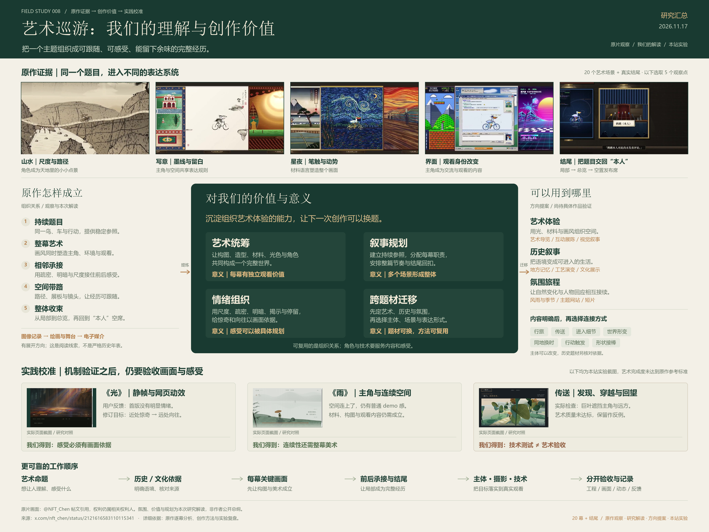
使用本次整理的同一张总览图；原片引用与我们的实验截图分别标注。可编辑 SVG ↗

研究汇总 原作证据在前，方法与实践在后。
艺术效果的目标、技术验证的结果、实际观看的反馈，分别记录。
01 / HOW THE ORIGINAL WORKS
让人眼前一亮的，
是整套关系一起变化。
画面不只在展示“同一只鸟的不同画风”。同一个骑行题目进入不同的艺术与媒介系统，角色、环境、构图、观看容器与节奏一起被重新组织。
每一幕都有自己的完整艺术世界
山水里的小尺度点景与道路，写意中的墨线与留白，星夜中的旋转笔触，分别决定了怎样看、怎样进入。风格同时作用于角色与环境，形成整幕的观看规则。
依据：山水 / 写意 / 主观笔触 ↗主角被转译，才能属于所在的世界
拓片中的白色实形、白描中的轮廓、示波器中的亮线、游戏中的像素形象，保留辨认依据，也遵守各自媒介的限制。持续角色因此可以把变化连起来，同时参与变化。
依据：同一个主角怎样成为线迹 ↗对“3D效果”的理解
空间串联提供带路与抵达的体感；展板里的视觉表达仍各有规则。原片可见的空间效果，不能直接证明其具体引擎、实时实现方式或作者工作流。
02 / WHAT WE SHOULD KEEP
值得沉淀的，
是一种组织创作的能力。
布局设计的价值包括画面内部，也包括整部作品：一幕里什么重要，下一幕怎样出现，主角怎样接入，最终又怎样让人回看整个经历。
把差异设计为可感的世界
画风不只是一套色板。造型、边缘、材料、空间、光色和主体尺度共同改变，观众才能感到进入了另一种表达。
用持续线索串起理解
保留可跟随的参照，允许场景充分变化。它既支持艺术比较，也让观众带着上一幕的记忆进入下一幕。
先给每幕分配职责
一幕负责建立，一幕负责展开，一幕负责转折或停顿；内容、疏密、明暗与节奏因整体目的而排列。
让结尾改变回看的角度
从局部体验到总览，再到“本人”的空位，作品不只是播放结束，而是获得了一个能被记住的观看角度。
对我们的创作，具体意味着什么？
| 可以带走的能力 | 下一次可以怎么用 | 判断是否成立 |
|---|---|---|
| 场景的艺术统筹 | 先选艺术命题，明确构图、材料、光色与角色表达规则 | 暂停时，这一幕仍有独立观看价值 |
| 注意力的连续交接 | 让行动、目光、形状、光或空间带出下一幕 | 观众能理解为什么从这里去那里 |
| 跨语境的转译 | 同一主题进入不同艺术、历史或媒介语境 | 保留身份的同时，表达方式确实改变 |
| 整篇的节奏规划 | 安排密与疏、近与远、动作与停留、局部与总览 | 每幕有职责，结尾回应此前体验 |
| 可回查的创作积累 | 把观察、解释、制作目标、真实反馈分开保存 | 下一次知道依据、有效关系和失败边界 |
可复用的核心：思路、方向、情绪和扩展空间。
题材可以完全改变，鸟和骑车不构成前提。艺术、历史与氛围先明确，再决定角色、镜头、交互和技术。
03 / THE THREAD THROUGH THE WORK
有发展的方向，
也有一条始终可跟随的题目。
可以读出“图像记录 → 绘画与舞台 → 主观感觉 → 电子媒介与界面”的展开。它将一个熟悉的动作放进越来越不同的观看方式；跨文化的选择和相邻关系，也不完全服从年代。
- 01—03 / 00:00—00:12
墙面与古代图像
岩画、埃及壁画、汉画像石拓片。以侧身、分层、行列与材料先建立辨认，让现代动作与古老图像产生错位。
- 04—11 / 00:18—01:00
进入绘画与舞台
白描、山水、市井、抄本、细密画、写意、皮影、浮世绘。角色的尺度、路径、图像容器与表演方式持续调整。
- 12—14 / 01:06—01:18
让环境带上主观感受
旋转笔触、倾斜与曲线、强烈暗影。空间和视觉语言承担张力，感受不必只靠角色表情。
- 15—20 / 01:24—01:54
进入屏幕、界面与生成外观
线迹、像素、聊天、蒸汽波、短视频信息流与代码美学。主体变成游戏角色、交流内容、被观看对象及规则外观中的表达。
- 结尾 / 约02:00—02:08
从二十份表达回到“本人”
总览将局部收成整体，发布席的空位再改变观看视角。原作品自己的收束，为此前的变化赋予余味。
关于历史主线的边界
这是一条艺术与媒介展开的阅读线索，不能直接当作严格编年的艺术史，也不意味着不同文化按同一条线“进化”。名称依据原片铭牌与总览，历史题材的后续创作仍需另做事实核查。
真实结尾：巡游 → 总览 → 空席
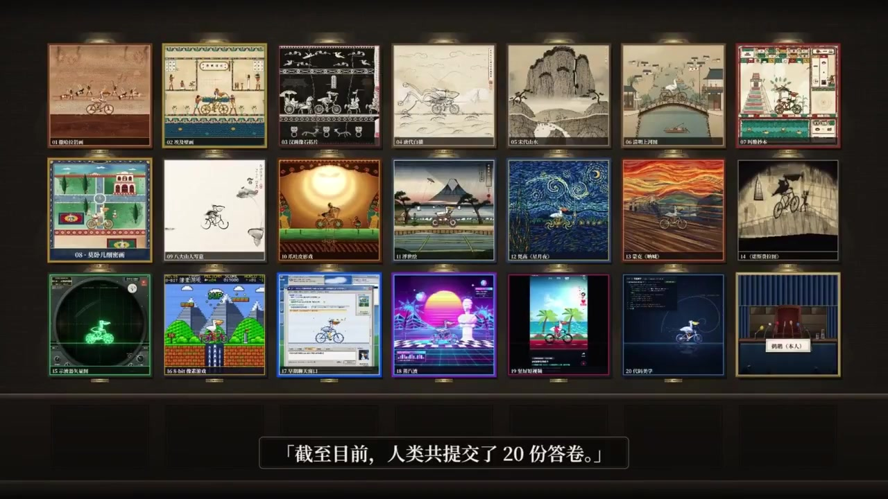
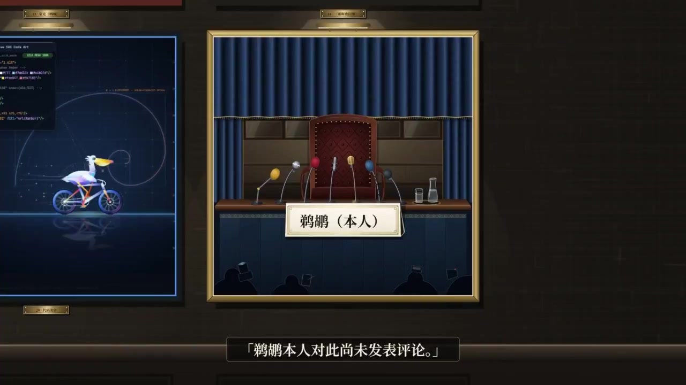
幽默回扣是本次基于画面的解读。未取得作者总纲，也不为主角补写成长、归家、送信或其他原片没有的故事。
04 / FEELING BETWEEN SCENES
感受的变化，
发生在具体的相邻关系里。
好奇、沉浸、张力、辨认与幽默，是从视觉关系中读出的方向。原作不必被压成一条均匀的情绪曲线；更有用的是逐次说明“上一幕留下什么，下一幕怎样回应”。
繁密 → 留白
细密画接写意
从装饰边框、建筑与密集内容，进入几笔墨线和大片空处。观看任务由辨认丰富细节，转向留意轻微笔势与空间。
暗影 → 亮线
电影暗影接示波器
黑暗把注意力集中到轮廓，再由发光线迹接住主体。材料、观看容器和视觉重心一起变化，媒介转换也有感官依据。
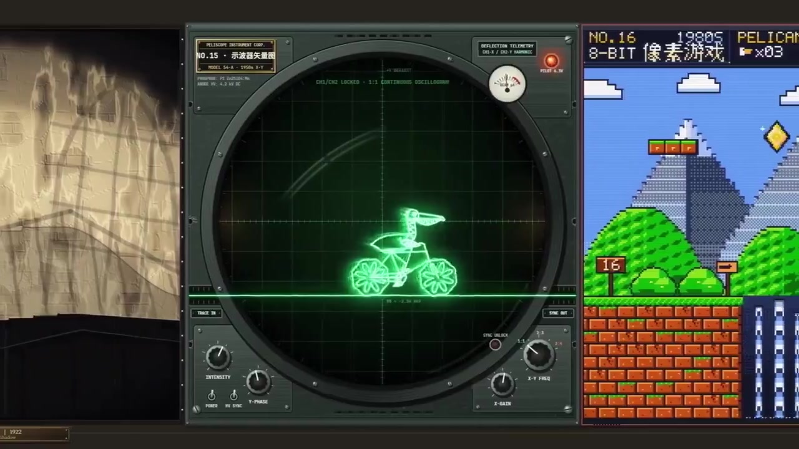
局部 → 整体 → 回扣
二十幕接总览与空席
经历差异之后先回看全部表达，再面对“本人”未置评的空位。感受从游历转向比较，最后以视角反差留下余味。
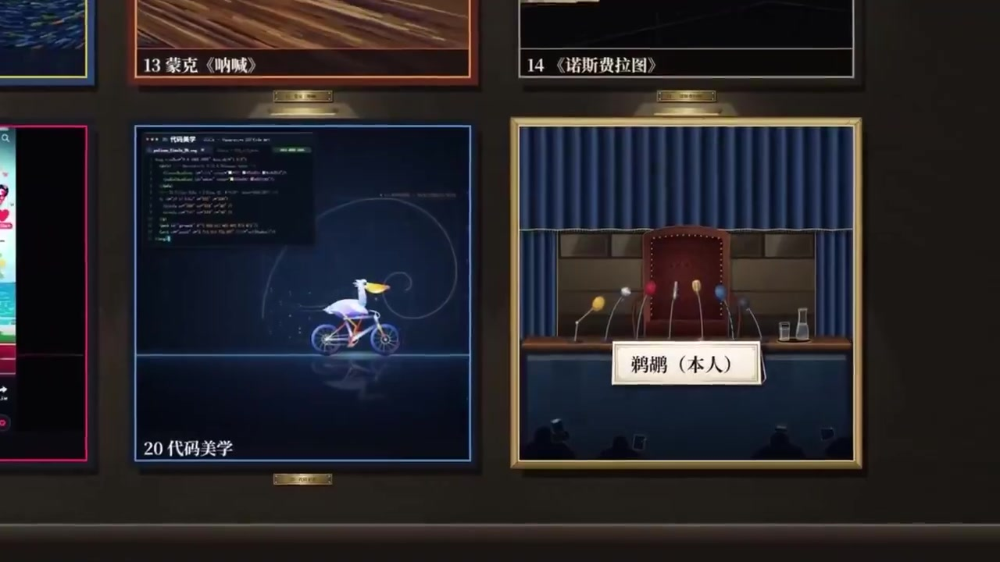
我们选择的后续创作方向：近处的惊奇 → 远处的向往。
这是讨论中为新作选定的目标，不是对原片全部情绪的概括。它需要可被发现的细节、值得抵达的世界，以及足够清楚的空间揭示。
06 / A REUSABLE CREATIVE FRAMEWORK
把组织关系留下，
让下一次作品可以换题。
先决定什么持续，什么改变
持续线索可以是身份、动作、光、水或时间。改变的可以是艺术语言、尺度、材料、容器和观看角度。持续线索要足够清楚，变化也要有表达意义。
每幕先成立，再检查前后关系
先明确本幕主题、视觉中心、意境与观看内容，再说明它接住什么、带向什么。整体的连续性不应以牺牲每幕的艺术价值换取。
主角既可辨认，也要属于环境
保留核心轮廓、动作或颜色记忆，同时按所在世界改变造型、边缘、笔触、材质与尺度。沿用一个角色，不等于沿用一套外观。
把情绪词改写成可见关系
“惊奇”由哪一次尺度或信息揭示发生？“向往”由怎样的远方、光线与路径支持？“停留”时究竟有什么值得看？这些问题应能在画面里回答。
用镜头建立注意力，而不只移动坐标
景别、运动方向、遮挡、空间交接和停顿，共同决定观众理解什么。人物在视锥内只是技术条件，可见、可读和构图成立还需实际看片。
最后一幕应当回应此前体验
可以总览、回望、交换视角、回到一个细节，或将题目交还给主体。收束要来自作品已经建立的关系，避免另加一段无依据的故事。
讨论中的持续校准
从“布局值得借鉴”，到“每页要有意境”，再到“主角带出连续经历”，最后明确“艺术、历史、氛围先行”。方法的重点逐步落到整幕美术与整体规划；角色、技术和连接形式服从这一目标。
07 / DIFFERENT WAYS TO CONNECT
连接方式，
要回答为什么去下一幕。
原片提供了持续主题与空间巡游的依据。以下七类是讨论中提出并进行过部分网页试验的扩展；它们不证明原作者采用了相同实现，也不能单独保证艺术效果。
| 方式 | 靠什么接住前后 | 适合表达的关系 | 常见失败 |
|---|---|---|---|
| 连续行旅 | 持续行动、共同路径、前方可预见的空间 | 陪伴、游历、接近与抵达 | 只有走路，沿途场景缺少独立价值 |
| 门与传送 | 入口先透露另一个世界，人物与镜头先后跨越 | 发现、试探、愿意进入、回望 | 只换颜色，门后没有值得向往的内容 |
| 进入细节 | 局部扩成整体，保留形状或意义的关系 | 微观与宏观、材料中的世界、探索 | 放大本身很炫，两个尺度之间没有关联 |
| 世界形变 | 连续保留轮廓或结构，同时改变材料与空间语法 | 艺术语言转译、梦境与演变 | 只有溶解或插值，旧形与新形缺少设计 |
| 同地换时 | 固定空间与参照，变化发生在时间 | 昼夜、季节、生活与历史记忆 | 用调色代替时间内容，用年份代替历史依据 |
| 行动触发 | 一个行为导致有空间次序的回应 | 唤醒、参与、探索和创造 | 动作与变化碰巧同时发生，看不出因果 |
| 形状与动作接棒 | 构图位置、形状、方向或动作成为下一幕的起点 | 诗意联想、蒙太奇、跨媒介意象 | 形状相似，却没有主题与情绪上的联系 |
传送还可以怎样展开？＋
穿门：先看见门内的内容，期待在跨越前发生；门槛强调身体与空间的关系。
跌入：进入画、倒影或书页，重点是失去原来的观看尺度与方向。
被包裹：墨、水、雾或光先改变周围，再显露另一世界，依靠环境变化接续感受。
主动开启：寻找、触碰或开启入口，让抵达成为一个行动的结果。
这些是形式提案。先明确两侧世界的内容与变化意义，再选择入口；传送不应替代美术场景设计。
08 / WHERE THE THINKING CAN GO
先选择内容中心，
再扩展题材与形式。
艺术语言怎样改变世界
围绕线条、光、材料、色彩或观看空间，规划多个有区别的表达。也可以深入单一艺术语言，变化来自尺度和注意力。
先验证：每幕是否真正拥有自己的造型、构图与材料规则。
让语境成为可进入的生活
选择一个时期、一个地点或一条有依据的发展脉络，研究空间、工艺、日常生活和观看方式怎样相互影响。
先验证：依据是否清楚，顺序是否有理由，避免年代与文化标签拼贴。
让一段感受持续展开
用风、雨、雪、雾、光、水、季节或空间疏密组织体验。自然应通过物体变化与人的回应变得可感。
先验证：氛围是否来自具体关系，场景是否有值得停留的内容。
两条已试做的命题
光怎样组织观看
彩窗的色光与空间 → 聚光中的人物与暗部 → 户外光色与空气。让光从象征、叙事走向瞬间感受；实际习作为生成静帧与网页动效。
查看命题、三幕和素材记录 ↗从一滴雨走向一江留白
檐下接近细节 → 林间穿行与纵深 → 江岸停留与远方。从静帧试做到连续三维行旅，逐步明确主角与空间的承接需求。
查看路线与阶段变化 ↗扩展可以换题、换主体、换场景。历史类内容尚未完成专题考证；这些方向不作为已验证的跨题材创作能力。
09 / WHAT WE ACTUALLY TRIED
保留实践的全过程，
也保留没有达到的目标。
这些实验帮助明确连续性与实现边界，但用户多次指出情绪与艺术质感不足。当前不把它们作为原作效果已经复现的证明；入口留作对照，制作记录完整保留。
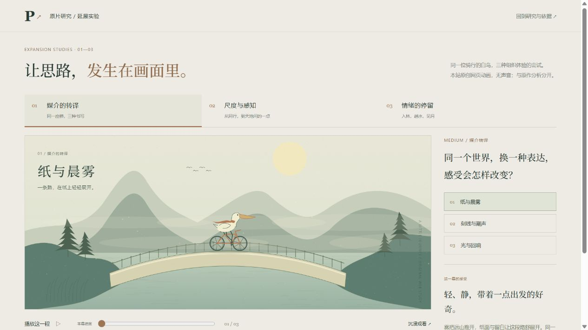
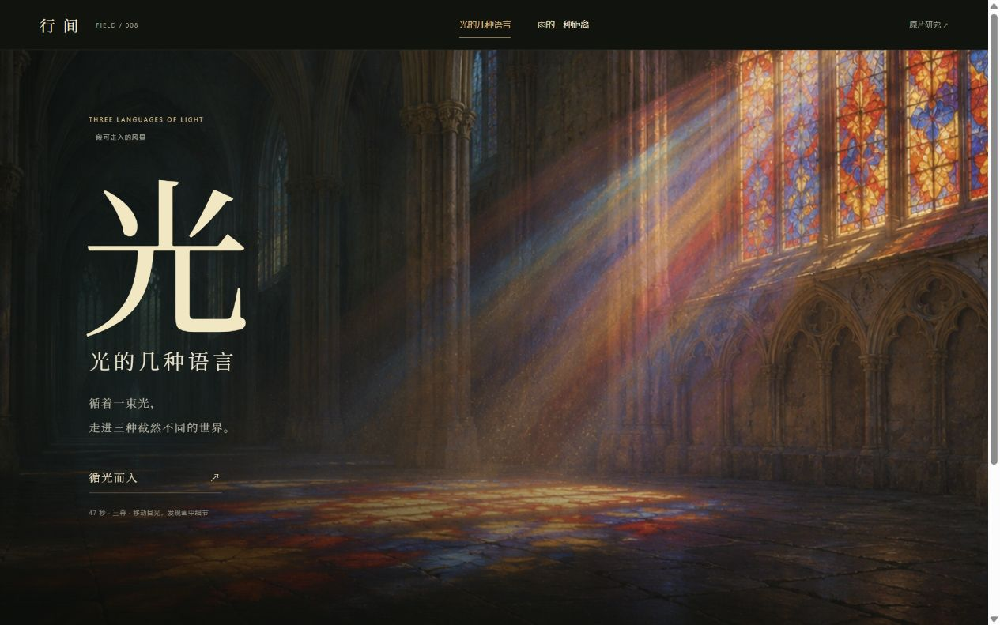
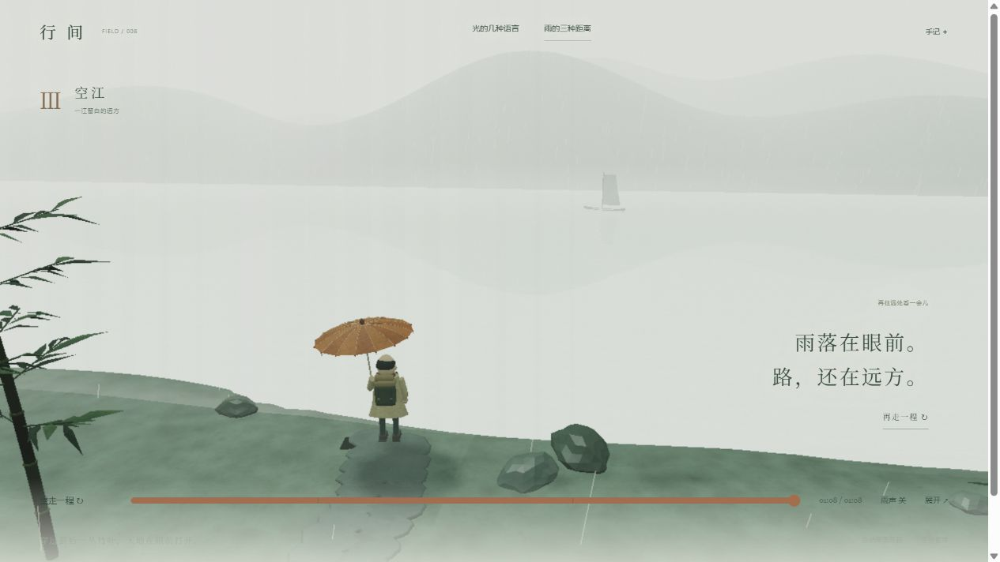
连续实时三维 / 约68秒
雨的三种距离
由静帧推进到有旅人的檐下、竹林与江岸；共同路径、雨、光、反射和连续摄影，安排接雨、行走、抵岸与停留。
用户反馈：主角与连续空间成立后，仍有普通3D demo感，艺术质感没有同步达到。
看三维实验 ↗看静帧旧版 ↗读艺术方向与验证 ↗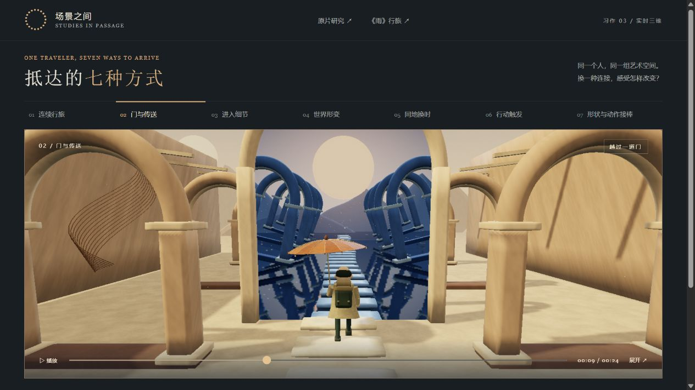
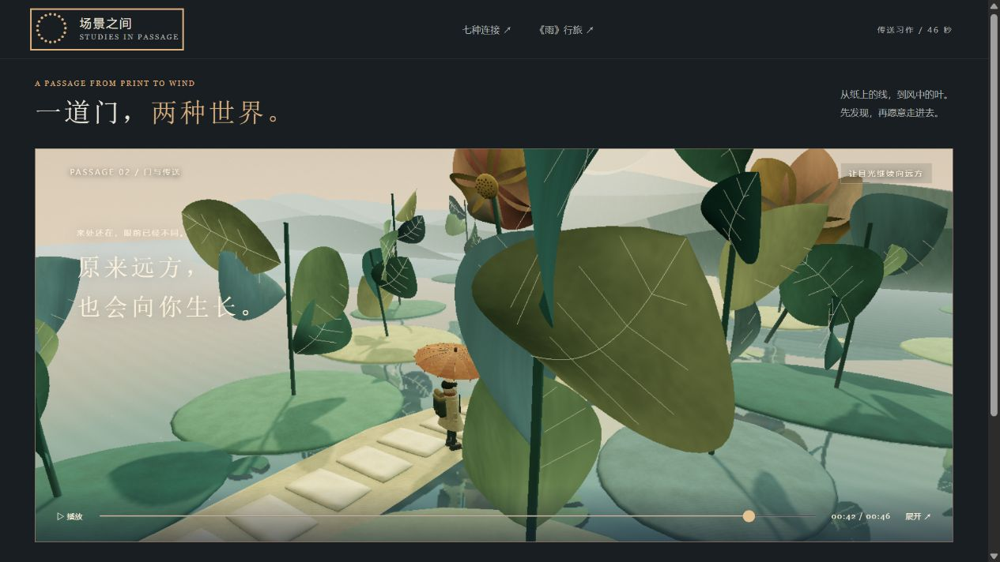
10 / THE GAP THAT MATTERS
技术上的连续，
没有自动变成艺术上的完整。
单个demo的集合不能替代完整作品。每幕的观看价值与整体关系都需要规划。
主体要进入空间、受材料与光影响，行动和视线带出下一幕；连续经历需要可信的前后关系。
角色与空间连通后，美术造型、构图、材料、视觉中心和情绪承接仍没有达到参考标准。
| 实际偏差 | 为什么会出现 | 应改变的做法 |
|---|---|---|
| 艺术停留在表面装饰 | 先搭基础几何路线，再用刻线、雾和颜色补风格 | 先明确整幅画面的形、光、材料、边缘与空间规则 |
| 主角像经过布景的游客 | 持续保留同一实体外观，缺少随艺术语言的转译 | 保留身份线索，同时改变造型、材质、尺度和表现方式 |
| 情绪只存在于文案和时间表 | 安排了停顿与转头，画面本身尚不足以支持惊奇和向往 | 先建立值得发现、值得抵达的内容，再安排动作与摄影 |
| 回望与远方被近景遮住 | 人物包围盒在视锥内，却没有检查遮挡和构图 | 真实看片，逐段判断主体是否可见、动作是否可读 |
| 测试结果与艺术验收混在一起 | 轨迹、坐标和资源检查成为推进的主要依据 | 分别记录工程正确、视觉成立、用户反馈与未验证项 |
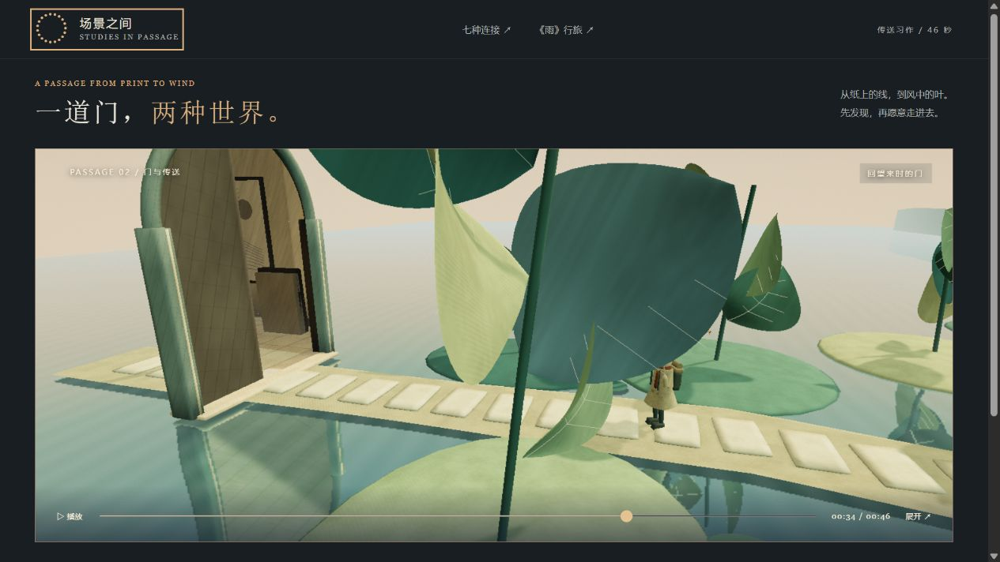
2026.11.17 / 实际关键帧
人物在画面里，
不等于人物能被看懂。
这次缺陷说明，坐标与视锥检查覆盖不了视觉中心、遮挡、风格和情绪。原有技术结果保留，艺术质量明确记为未达标。
查看原片与当前画面对照的完整诊断 ↗11 / A BETTER ORDER OF WORK
先让画面成立，
再让它们成为一段经历。
- 01
明确命题与语境
要进入什么世界，理解或感受什么？历史依据、文化语境与素材来源分别是什么？
- 02
定义每幕的艺术职责
主题、视觉中心、构图、疏密、光色、材料、角色转译和观看内容，共同回答这一幕为什么值得存在。
- 03
建立少量关键画面目标
门前、门中、门后，或开篇、变化、收束，先检查暂停画面的质量。关键画面是美术验收目标，最终仍需落实到连续空间。
- 04
规划前后承接和结尾
上一幕留下什么，下一幕怎样回应？观众靠什么跟随？收束怎样重新组织对前面内容的理解？
- 05
让主体、摄影与技术服务内容
选择连续三维、分层空间、程序绘制或生成素材等合适手段，按目标制作资产；实际检查遮挡、视线、动作与注意力。
- 06
分开验收，再记录反馈
工程正确、画面质量、动态体验与用户情绪反馈各有证据。先做少量场景和一个收束，通过后再扩展数量。
展开一张可以直接复用的创作规划卡＋
- 艺术命题
- 希望观众进入怎样的艺术世界，理解或感受什么？
- 历史与来源
- 哪些资料支持这个语境，哪些事实尚需核对？
- 串联线索
- 用光、水、材料、时间、空间、视角还是角色？为什么适合内容？
- 每幕职责
- 本幕的主题、视觉中心、意境，以及对前后幕的回应是什么？
- 主角转译
- 身份靠什么持续，造型、尺度与材料怎样融入世界？
- 情绪依据
- 进入、变化与结尾的感受，由哪些可见关系支撑？
- 结尾回扣
- 最后怎样改变对前面内容的理解？
- 先验证什么
- 哪三幅关键画面最能证明方向？哪些遮挡或衔接最可能失败？
12 / THE COMPLETE RESEARCH RECORD
把资料留下，
让判断可以回查。
首页提供当前综合判断；专题档案保留原文、制作过程、版本边界与真实反馈。较早文档中的“当前”“下一步”按其记录语境阅读，最新艺术质量结论以本页与2026-11-17复盘为准。
{{ARCHIVE_CARDS}}来源、验证和未知
我们直接看到了什么
20个风格场景及真实结尾；相邻关系、构图、角色处理、总览与空席。输入记录为128.8秒、1280×720、30fps画面。常规每6秒抽样，结尾另核对120、123、126、128秒。
哪些属于我们的判断
意境、氛围、情绪与设计规划的归纳，艺术与媒介主线的阅读，以及对创作意义的提炼。它们不作为作者意图或观众反应的实测结果。
哪些是后来制作的
白鸟动效、光雨习作、连续三维、七种连接和传送精修。生成静帧、程序绘制、实时三维及实际页面截图分别标注，均不属于原作剧情。
哪些不能据此下结论
原作者总纲、真实源码、完整提示词、具体实现栈，帖文模型归属与生成次数、稳定复用能力。未听审原片声音；界面出现不证明已实现交互。
权利与使用：原片图像仍属原作者及相关权利人，未发现明确开放许可。本页仅引用支撑评论的抽帧并保留来源，不提供完整原视频，也不将引用图作为可复用素材包。
记录原则：时间为抽帧点，不是精确分幕边界；艺术名称依据铭牌，不等于经过艺术史鉴定。本站将已有研究与实验整理为公开阅读档案；没有新增艺术实验。实验记录中的历史验证结论按其版本和范围阅读。
回到 @NFT_Chen 原帖 ↗来源与素材说明 ↗完整验证记录 ↗